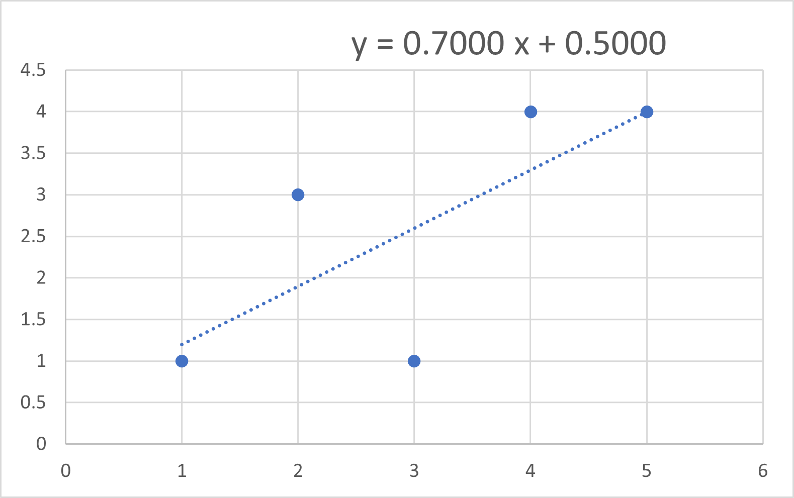

実際の数字を入れてみて．
実際に数字を入れてみて確認しましょう．
今回も，参考にさせていただいたサイトの値を用います．
| i | \( X_i \) | \( Y_i \) |
\( X_i - \bar{X} \)
|
\( Y_i - \bar{Y} \)
|
\( (X_i - \bar{X})(Y_i - \bar{Y}) \)
|
| 1 | 5 | 4 | 2 | 1.4 | 2.8 |
| 2 | 1 | 1 | -2 | -1.6 | 3.2 |
| 3 | 3 | 1 | 0 | -1.6 | 0 |
| 4 | 2 | 3 | -1 | 0.4 | -0.4 |
| 5 | 4 | 4 | 1 | 1.4 | 1.4 |
| 合計 | 15 | 13 | 0 | 7 | |
| 二乗の合計 | 10 | ||||
| 平均 | 3 | 2.6 |
エクセルで 近似すると，

となり，
傾き ： 0.70
切片 ： 0.50
となります．
・\(\Large \displaystyle \hat{a_1} \)，の計算
\(\Large \displaystyle S_{XY} \equiv \frac{1}{n} \sum_{i=1}^{n} \left(X_i - \bar{X} \right) \left(Y_i - \bar{Y} \right) = \frac{7}{5} = 1.4 \)
\(\Large \displaystyle S_{XX}^2 \equiv \frac{1}{n} \sum_{i=1}^{n} \left(X_i - \bar{X} \right)^2 = \frac{10}{5} = 2 \)
\(\Large \displaystyle \hat{a_1} = \frac{S_{XY} }{S_{XX}^2} = \frac{1.4}{2} = 0.7 \)
と一致します．
・\(\Large \displaystyle \hat{a_0} \)，の計算
\(\Large \displaystyle \hat{a_0} = \bar{Y} - \hat{a_1} \bar{X} = 2.6 - 0.7 \times 3 = 0.5 \)
と一致します．
それでは，次ページに推定した，\(\Large \displaystyle \hat{a_1}, \hat{a_0} \)，の精度，分散値を計算してみましょう．